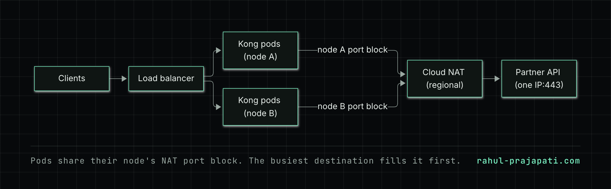
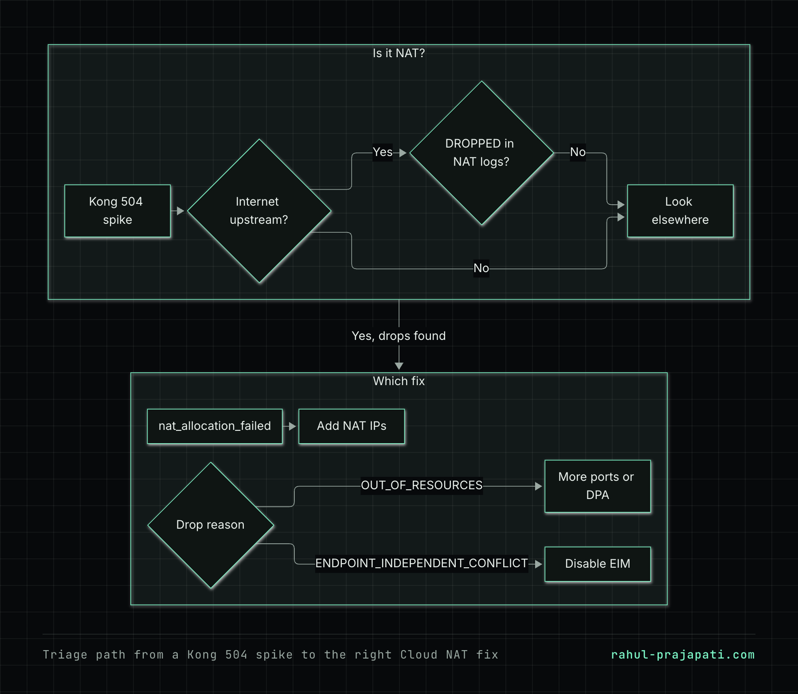

A Kong gateway in front of partner APIs starts returning 504s on one route. The error log fills up with upstream timed out (110: Connection timed out) while connecting to upstream. The partner sees nothing on their side, every other route is fine and the Kong pods have spare CPU. You add replicas and the error rate doesn't move.
If failures happen at connect time, only for upstreams on the internet, and are worst on the busiest destination, check Cloud NAT source ports first. Where those ports live is what catches people out. Cloud NAT gives out ports per node, not per pod, and counts them per destination. So adding Kong pods on the same nodes adds no capacity, and Kong's default retries make the shortage worse.
At AirAsia MOVE I have closed Cloud NAT port exhaustion alerts and worked through more than 15 5xx spike incidents across load balancers, GKE and Cloud Run. Most 5xx spikes are not NAT. This post shows how to prove it is NAT quickly, how to fix it in Terraform and how to size NAT so a traffic campaign doesn't bring the problem back. At the end there is a small lab that reproduces the limit in a sandbox project.
NAT ports belong to the node, not the pod
Cloud NAT gives each VM a block of source ports. On GKE the VM is the node, and every pod on that node shares the node's block. With static allocation the default block is 64 ports.
A NAT IP and port can carry several connections at once, as long as each one goes to a different destination (IP, port and protocol). So 64 ports means 64 concurrent connections from one node to one destination IP:port. A gateway that spreads its calls across many destinations barely touches its block. The worst case is a gateway sending most of its traffic to one partner endpoint behind a single IP.
Two things follow from this:
- More Kong replicas don't add NAT ports. Pods on the same nodes share the same block. Capacity only grows with more nodes or more ports per node.
- Closed connections keep their port. Cloud NAT holds the mapping for a closed TCP connection for the TIME_WAIT timeout, which is 120 seconds by default. If every request opens a new connection, a node with 64 ports to one destination can manage about 64 / 120, roughly 0.5 new connections per second, before it starts dropping SYNs. Upstream keepalive in Kong is usually what keeps you below that.

None of this applies to Google APIs. Google Cloud turns on Private Google Access for the subnet ranges a Cloud NAT gateway serves, so that traffic skips NAT. Calls to anything inside your VPC skip it as well. If the failing upstream is internal, the cause is somewhere else.
Step 1: Prove it is NAT
What Kong shows
When no port is free, Cloud NAT drops the outgoing SYN. Kong's nginx gets no reply, waits for the Service connect_timeout (60000 ms by default) and returns a 504. Two Kong defaults make this worse:
- Services retry 5 times by default. Every retry is another connection attempt from the same node, against the same exhausted block.
- Every attempt waits out its own connect timeout, so a request can take a minute or more to fail. Connections pile up and the latency charts look like an upstream outage.
If the 504s say "while connecting to upstream", only hit internet upstreams and mostly come from one or two hosts, go straight to the NAT logs.
NAT logs
NAT logging is off unless someone turned it on, and entries only appear from the moment you enable it. Turn on error logging now, before the next spike:
gcloud compute routers nats update NAT_NAME \
--router=ROUTER_NAME \
--region=asia-southeast1 \
--enable-logging \
--log-filter=ERRORS_ONLYERRORS_ONLY records dropped connections only, so the log volume stays small. Then group the drops by node and destination:
gcloud logging read '
resource.type="nat_gateway"
jsonPayload.allocation_status="DROPPED"' \
--freshness=1h \
--limit=1000 \
--format="value(jsonPayload.endpoint.vm_name,jsonPayload.connection.dest_ip,jsonPayload.connection.dest_port)" \
| sort | uniq -c | sort -rn | head -20If you get a handful of GKE node names paired with one or two destination IPs, that confirms it. Those are the nodes running Kong, and those IPs are the partner endpoints taking the load.
Metrics
Check these in Metrics Explorer:
compute.googleapis.com/nat/port_usage(resourcegce_instance): the highest number of ports a VM is using to any single destination. Put it next tocompute.googleapis.com/nat/allocated_portsfor the same nodes. If usage stays close to the allocation on the gateway nodes, you are at the limit.router.googleapis.com/nat/dropped_sent_packets_count(resourcenat_gateway), grouped by thereasonlabel.OUT_OF_RESOURCESmeans a VM had no free port.ENDPOINT_INDEPENDENT_CONFLICTcomes from endpoint-independent mapping, covered in Step 4.router.googleapis.com/nat/nat_allocation_failed: the gateway couldn't give a VM even its minimum ports because the NAT IPs are full. This is what you hit when the cluster autoscaler adds nodes during a campaign. Those new nodes get no internet egress at all.

Step 2: Read the current config
Look at what is set before you change anything:
gcloud compute routers nats describe NAT_NAME \
--router=ROUTER_NAME \
--region=asia-southeast1 \
--format="yaml(natIpAllocateOption,natIps,minPortsPerVm,maxPortsPerVm,enableDynamicPortAllocation,enableEndpointIndependentMapping,tcpTimeWaitTimeoutSec,logConfig)"A field that doesn't show up in the output is usually on its default. Note down natIpAllocateOption. With AUTO_ONLY, Google adds NAT IPs for you, but you can't know them in advance, which breaks any partner that allowlists your egress IPs. With MANUAL_ONLY you own the IPs, and you also own the job of adding more.
Step 3: Choose static min ports or dynamic port allocation
Static (min-ports-per-vm) |
Dynamic port allocation (DPA) | |
|---|---|---|
| Ports per VM | Fixed at the minimum | Starts at the minimum, doubles as the VM fills it, up to the maximum |
| Default minimum | 64 | 32 |
| Power of 2 rule | No | Minimum and maximum must be powers of 2 |
| NAT IP use | Every VM reserves the full block, even idle ones | Only the minimum is reserved, the rest is handed out on demand |
| Endpoint-independent mapping | Can be on | Must be off |
| Fits | Uniform nodes with predictable egress | Uneven nodes, such as a gateway pool next to quiet workloads |
I prefer DPA for subnets that hold gateway nodes. With static allocation every node in the subnet gets the same block, so you size every node for the busiest Kong node and spend NAT IPs on nodes that hardly call out. DPA lets the busy nodes grow and keeps the quiet ones at the minimum.
DPA has two limits. It can only hand out ports the gateway still has free, so a large maximum with too few NAT IPs does nothing. And growth isn't instant, so a sharp burst can still drop some connections while the allocation doubles. Keep the minimum high enough to cover a normal peak without waiting for growth.
Step 4: Turn off endpoint-independent mapping unless you need it
Endpoint-independent mapping (EIM) pins an internal IP:port to the same NAT IP:port for every destination. Some peer-to-peer and NAT traversal protocols need that. An API gateway calling HTTPS upstreams doesn't.
The cost is lost flexibility. With EIM off, Cloud NAT can reuse a NAT port for different internal source ports as long as the destinations differ. With EIM on, each mapping stays tied to one internal source, so Cloud NAT sometimes can't find a mapping that works and drops the packet with reason ENDPOINT_INDEPENDENT_CONFLICT. EIM also has to be off before you can enable DPA. The default has depended on how and when the gateway was created, so check the describe output and set it explicitly.
Step 5: The Terraform
A NAT gateway with manual IPs, DPA, EIM off, a shorter TIME_WAIT and error logging:
resource "google_compute_address" "nat" {
count = var.nat_ip_count
name = "egress-nat-ip-${count.index}"
region = var.region
}
resource "google_compute_router" "egress" {
name = "egress-router"
region = var.region
network = var.network_id
}
resource "google_compute_router_nat" "egress" {
name = "egress-nat"
router = google_compute_router.egress.name
region = var.region
nat_ip_allocate_option = "MANUAL_ONLY"
nat_ips = google_compute_address.nat[*].self_link
source_subnetwork_ip_ranges_to_nat = "LIST_OF_SUBNETWORKS"
subnetwork {
name = var.gke_subnet_id
source_ip_ranges_to_nat = ["ALL_IP_RANGES"]
}
enable_dynamic_port_allocation = true
enable_endpoint_independent_mapping = false
min_ports_per_vm = 256
max_ports_per_vm = 4096
tcp_time_wait_timeout_sec = 30
log_config {
enable = true
filter = "ERRORS_ONLY"
}
}The 256 / 4096 / 30 values are only example starting points. Set yours from port_usage measured under load. A shorter tcp_time_wait_timeout_sec frees ports sooner. The trade-off is that a late packet from an old connection can land on a mapping that has already been reused, which is usually acceptable for HTTPS to a partner API. ALL_IP_RANGES covers the node range and the pod secondary ranges, so it works whether pod egress is masqueraded to the node IP or leaves with the pod IP.
Change Kong in the same window:
- Review
upstream_keepalive_pool_size,upstream_keepalive_max_requestsandupstream_keepalive_idle_timeoutinkong.conf(or the matchingKONG_environment variables in your Helm values). Pools are per nginx worker, so every worker in every Kong pod on a node takes connections from the same block. - Lower
retriesandconnect_timeouton Services that call fragile partners, so a dropped SYN fails in seconds instead of minutes. - Keepalive only helps if the upstream also keeps connections open. If the partner answers with
Connection: close, every request opens a new connection, and its port then sits in TIME_WAIT.
Step 6: Size it before the campaign
I've handled campaign scaling requests. The NAT side is easy to forget because no HPA shows it. Check two numbers:
- Floor. Take the autoscaler maximum (not today's count) for every node pool in subnets this NAT serves, and multiply by
min_ports_per_vm. If that is more than your NAT IP count × 64,512, the last nodes to scale up hitnat_allocation_failed. Each NAT IP has 64,512 usable ports (1024 to 65535). - Peak. Take the ports the busy nodes need under load, from
port_usagein a load test, plus headroom. The worst case with DPA is every node atmax_ports_per_vm.
Required NAT IPs = ceil(total ports / 64,512). Using the worst case for the Terraform above: 40 nodes × 4,096 ports = 163,840 ports, which is 2.54 IPs, so 3. I'd add one more for headroom. If partners allowlist your egress IPs, send them the new ones well before the campaign, because their change window is usually slower than yours.
Spreading Kong across more nodes also helps, because each node brings its own block. Use topologySpreadConstraints with topologyKey: kubernetes.io/hostname, or a dedicated node pool with more, smaller nodes.
Alert on drops and allocation failures so you hear about them before users do:
resource "google_monitoring_alert_policy" "nat" {
display_name = "Cloud NAT drops or allocation failure"
combiner = "OR"
notification_channels = [var.notification_channel_id]
conditions {
display_name = "NAT dropped sent packets"
condition_threshold {
filter = "resource.type = \"nat_gateway\" AND metric.type = \"router.googleapis.com/nat/dropped_sent_packets_count\""
comparison = "COMPARISON_GT"
threshold_value = 0
duration = "60s"
aggregations {
alignment_period = "60s"
per_series_aligner = "ALIGN_RATE"
cross_series_reducer = "REDUCE_SUM"
group_by_fields = ["metric.label.reason"]
}
}
}
conditions {
display_name = "NAT allocation failed"
condition_threshold {
filter = "resource.type = \"nat_gateway\" AND metric.type = \"router.googleapis.com/nat/nat_allocation_failed\""
comparison = "COMPARISON_GT"
threshold_value = 0
duration = "60s"
aggregations {
alignment_period = "60s"
per_series_aligner = "ALIGN_COUNT_TRUE"
}
}
}
}Drops tend to come in bursts, so keep duration short. A five-minute window can miss a spike that already hurt users.
Try it yourself
This lab shows the per-destination limit in a throwaway project. A private client VM sits behind NAT with 64 static ports. A "sink" VM in a separate VPC accepts connections and keeps them open.
export PROJECT_ID=my-sandbox-project REGION=asia-southeast1 ZONE=asia-southeast1-a
gcloud config set project $PROJECT_ID
gcloud services enable compute.googleapis.com iap.googleapis.com
# Client side: private VM behind Cloud NAT
gcloud compute networks create nat-lab --subnet-mode=custom
gcloud compute networks subnets create nat-lab-subnet --network=nat-lab --region=$REGION --range=10.10.0.0/24
gcloud compute firewall-rules create nat-lab-iap --network=nat-lab --allow=tcp:22 --source-ranges=35.235.240.0/20
gcloud compute addresses create nat-lab-ip --region=$REGION
gcloud compute routers create nat-lab-router --network=nat-lab --region=$REGION
gcloud compute routers nats create nat-lab-nat --router=nat-lab-router --region=$REGION \
--nat-all-subnet-ip-ranges --nat-external-ip-pool=nat-lab-ip \
--min-ports-per-vm=64 --no-enable-endpoint-independent-mapping \
--enable-logging --log-filter=ERRORS_ONLY
gcloud compute instances create nat-client --zone=$ZONE --subnet=nat-lab-subnet --no-address
# Sink side: separate VPC, public IP, only accepts the NAT IP
NAT_IP=$(gcloud compute addresses describe nat-lab-ip --region=$REGION --format='value(address)')
gcloud compute networks create nat-sink-net --subnet-mode=auto
gcloud compute firewall-rules create nat-sink-in --network=nat-sink-net --allow=tcp:8080 --source-ranges=$NAT_IP/32
gcloud compute firewall-rules create nat-sink-iap --network=nat-sink-net --allow=tcp:22 --source-ranges=35.235.240.0/20
gcloud compute instances create nat-sink --zone=$ZONE --network=nat-sink-net
gcloud compute instances describe nat-sink --zone=$ZONE \
--format='get(networkInterfaces[0].accessConfigs[0].natIP)'The last command prints the sink's external IP. SSH to the sink (gcloud compute ssh nat-sink --zone=$ZONE --tunnel-through-iap), save this as sink.py and run it with python3 sink.py. It accepts connections and never closes them:
import socket
s = socket.socket()
s.setsockopt(socket.SOL_SOCKET, socket.SO_REUSEADDR, 1)
s.bind(("0.0.0.0", 8080))
s.listen(1024)
held = []
while True:
conn, _ = s.accept()
held.append(conn)
print("open:", len(held), flush=True)SSH to the client the same way, save this as client.py with the sink IP filled in, and run it. It opens 150 connections to the same IP:port and holds them for two minutes, which gives you time to look at port_usage:
import socket, time
SINK = "SINK_EXTERNAL_IP"
ok, failed, held = 0, 0, []
for _ in range(150):
c = socket.socket()
c.settimeout(1)
try:
c.connect((SINK, 8080))
held.append(c)
ok += 1
except OSError:
failed += 1
print(f"connected={ok} failed={failed}")
time.sleep(120)About 64 connections should succeed and the rest time out. The log query from Step 1 shows matching DROPPED entries for nat-client after a minute or so. Now switch the gateway to DPA:
gcloud compute routers nats update nat-lab-nat --router=nat-lab-router --region=$REGION \
--enable-dynamic-port-allocation --min-ports-per-vm=64 --max-ports-per-vm=1024Before you run the client again, restart the sink so it closes the old connections, then wait a couple of minutes. Closed connections keep their NAT port for the TIME_WAIT timeout, so if you rerun immediately you are fighting your own old mappings. That's the same behaviour that hurts a gateway without keepalive. On the next run more of the 150 should get through. The first run after the change may still drop some while the allocation doubles, which is the DPA lag from Step 3. Delete the project when you're done.
What to check after the change
nat_allocation_failedstays at zero while the autoscaler scales up. If it fires, add IPs before you touch ports.port_usageon the gateway nodes stays well belowallocated_portsat your normal peak.- The drop alert is quiet, and the Kong 504s with "while connecting to upstream" are gone.
- Roll back by reverting the Terraform change, so state doesn't drift from a manual
gcloudfix. Lowering ports or removing NAT IPs can affect connections that are still open, so do it in a quiet window. To retire an IP, move it to the drain list first (drain_nat_ipsin Terraform,--nat-external-drain-ip-poolin gcloud), and never remove one that a partner still allowlists.